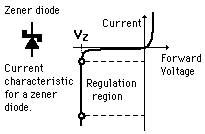

Zener Applications
The
Zener effect
as embodied in the
zener diode
has many applications for control and regulation.

Applications
Zener Regulators
Zener Controlled Comparators
Zener Limiters
Role in Power Supplies
Index
Electronics concepts
Diode varieties
HyperPhysics
*****
Electricity and magnetism
R Nave
Go Back